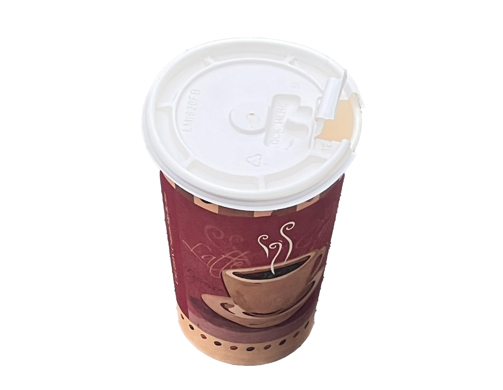

ToGo Red And Brown Coffee Cup Disposible Coffee Cup Coffee Sold Separately Can Hold Tea Too Not Insulated White Plastic Lid In Good Condition
6 mnths - 1 yr

White Blue And Green Styrofoam Cup With Coffee Mug Printed On It Temporary One Use Coffee Cup Disposible Coffee Cup In Great Condition
500 - 1000 yrs

Starbucks Coffee Cup Disposible Hot Beverage Cup Coffee Stains Grande Size Starbucks Cup 16oz Single Use Cup No Lid Not Spill Proof In Okay Condition
6 mnths - 1 yr

Americano Coffee Cup Cardboard Disposible Hot Beverage Cup Coffee Not Included Does Not Come With Lid Not Spill Proof
6 mnths - 1 yr